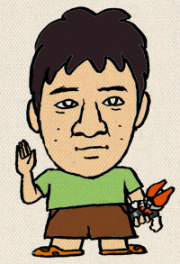

A ええ… そうですね。
知り合ったのは、エグザイルのオーディショ…
あ…
もうＱ＆Ａ形式はいいんですか？
そうでしたか…
わかりました…
どうも、ご無沙汰してます。
実写でもロクな事が喋れない倉島です。
まさか２回目があるとは知らず、
前回のブログで、ネタのほとんど出し尽くしてしまいました。
なので、正直もう書くべき事柄が見付からないのです。
困りましたね。
いや、待てよ…
そうだ！
今日8/31（金）売りのファミ通（旧名ファミコン通信）にて、
project Oの最新情報が公開されるのでありました。
正式タイトル発表！
主人公初公開！
ゲーム画面初公開！
おお… 初ものづくし。
今まで伏せてきました様々なネタをドドーンとお見せしちゃいます。
もう読んでらっしゃる御貴兄もいらっしゃるのでしょうか。
そうなんです、そんなタイトルなんです。意外性でしょ？
実機画像はどうですか？期待度大ですね。ワクですね。
自キャラ、可愛いでしょ？
主人公はネコ耳で見習い魔法使いでドジっ娘で野球選手なんです。
どうですか？期待は高まりましたか？
もしくは、私の文章にイラッときましたか？
…すみませんでした
寝不足でして… ちょっと調子こいちゃいました。
ごめんなさい。
でも、ほとんど寝ずでＯキャラネタ絵を描きめぐらしてます。
おもろくて変な物をご家庭に届けるために日夜頑張ってます。
是非ともご期待下さい。
（多少、恩着せがましかったかな）
なんとか書ききったつもりですが、酷いもんです。
次の方、まともな文章おねがいしまーす。
では。

皆様おひさしぶりです。プロデューサーの木村です。
なんつうか、ほんと楽し忙しいですわ。死ぬかとおもうほど忙しいけど、
なんか体、元気だし（笑）
ところで、みなさん、“体”と“心”ってどっちが先なんですかね！？
＊＊＊＊
昔、僕の大好きなバレーボール漫画にあった台詞で
「ＸＸちゃんは楽しいから跳ねているのかな？
それとも跳ねているから楽しいのかな？」
という台詞があって、それをふとおもいだすんです。最近。
ゲームの開発や制作の仕事って
下手すると机にすわって電話しまくったり
キーボードたたきまくったりしていますが
これってなんつうか、肉体的に躍動しないんですよね。
だから時々「体が楽しい」「楽しいから体が動く」っていう感覚を
忘れガチだとおもうのです。
何がいいたいかっていうと、最終的に僕らがめざしてる「操作感」にはきっと
そういう感覚が必要なんだろうなという話なんです。
ちなみに「跳ねてるから楽しい」っていうのは、
本当にあるんですよ。漫画を読んでて、「うーん」とかんがえて
友達とためしに跳ねてみました。昼間の公園で。
ぴょーん♪ぴょーん♪と跳ねてみたんです。
すると跳ねてるあいだになんか楽しくなってくるんですね。
これってほんと面白い。
理由はいろいろあると思います。
昼だったからとか。その友達のノリがよかったとか。
でも遊びの一番シンプルなところって
これじゃないかなぁと思うんです。
「昨日、はねてみたら面白かったよ！」みたいな。
今、プロジェクトＯは「シミュレーションなのか？」とか「ＲＰＧなのか？」とか
「ストラテジーなのか？」とか色々いわれてますが、
正直ジャンルはどうでもよくて大事なのは、いかに操作がおもろいか？
ってところなんですよね。
今回の作品、ボタンを１つ押しただけでも楽しくなるようにしたいなと
思っています。
操作しているだけで、楽しくなるように。
それこそ、ぴょんと公園ではねるたびにハイになってしまうように。
とにかく、これが目標。まだ作っている途中なんで
まだまだトライしないといけないことは色々あるけど
この目標にむかってつきすすみたい。できるかな～。がんばりたいな～。
なんて、色々かいてますが・・・
こんな御託を並べるひまがあったら、ゲーム画面の一枚も公開しろって？
実は、ここで大発表。
なんせ、ＴＧＳがまちかまえてますからね（笑）
ぶっちゃけ、まだまだ開発中ですが、もうそろそろ見せちゃいます。
☆ ☆ ☆ ☆
臨時ニュース
8.31売りのファミ通にて、
”PROJECT O 続報”が出ます
正式タイトル発表！！
主人公初公開！！
ゲーム画面初公開！！
乞うご期待！
ご覧のみなさま、始めまして。
ディレクターの川口洋一です。
開発現場を預かる大変重要なポジションに、
プレッシャーを感じつつも楽しんで開発しております。
『ディレクター』って何をする人だと思います？
監督？ 指揮？ 担当？
私にとってゲーム制作におけるディレクターとは
「どんなゲームをどのように作るか考える人」なんですよね。
それってゲームデザイナーじゃないのって？
うん、近いっ
でも違う！
ゲームをユーザーにどのように遊んでもらうか、
どのように楽しんでもらうか、
統括して全体を把握し構成をまとめる。
その指針を打ち出さなくては、まとまったゲームにはなりません。
あれ？？？
ここまで書いて普通のことだったかも（汗っ
実際にゲームを動かすのは、プログラマーの仕事です。
彼らが「それは無理だよ」って言ってしまったら、それでおしまい。
唯一の「作れる人」の言葉ですからね。
幸か不幸か、私はプログラマーとして働いてきました。
Project O では『それ』を言わせません（笑
か・な・ら・ず、方法を模索します。
もしくは、作るためにどうすればよいかをディスカッションすれば良いのです。
プランナーさんの「面白いアイデア」を生かすも殺すも
プログラマー次第っておかしいと思いません？
デザイナーさんの「美しい映像目標」を生かすも殺すも
プログラマー次第っておかしいと思いません？
そんなの作っちゃえばいいじゃん！って普通に思います。
みんなすごいんですよ。
６人のメンバーもそうですが、プランナ、プログラマ、デザイナ、
それぞれのポテンシャルはハンパねぇっス。
スタッフそれぞれの思いを知ってるから、信じて無茶言える。
こんなことを思っているディレクターです。
必ず、「楽しいっ」「面白いっ」「遊んでよかったっ」と思えるソフトを
みなさまの元へお届けいたします。
続報をお待ちくださいっ！
さてさて、
本日、８月１７日金曜日、ファミ通.comさまのホームページにて
「Project O 制作スタッフコメント」ムービーが配信される予定です。
一人ずつのコメント形式で、思い思いのことを語っております。
我々６名の「意気込み」お聞きください！
ところで、キムＰ？（便乗）
７人目のサムライは、どうなっとーと？
みんな、首を長くして待っとーとよ？
みなさん、こんにちは。ブログ初登場、ゲームデザイン担当の安永です。
今、福岡は夏真っ盛り。
そして福岡のチームも、開発の真っ盛りを迎えています。
熱気と緊張感と笑い声の入り混じった、この独特の空気につつまれながら、
「そうそう、これがゲームの生まれる瞬間なんだ」と、
今更ながらに実感しているところです。
そんな中、開発の手をちょっと休めて、ブログを書かせていただこうと思います。
今回のプロジェクトには、様々な経歴のスタッフが集結しました。
それぞれ、信念と誇りを持って、独自のスタイルで
ゲームを作ってきた方々ばかりです。
みんな、相当な“こだわり”を持っているんですよね。
だもんで、僕の出した仕様が、そのまま通らないこともしばしば。
様々な角度から、様々な意見が飛んできます。
もちろん、意見が衝突することだってあります。
でも、この意見の衝突が貴重なんですよ。
むしろ、衝突を楽しんでいると言った方がいいかもしれません。
みんなで知恵をしぼり、熱く議論して、徹底的に検討を重ねることで、
何かの化学反応が起きて、これまでにない高みへ、
自分を引っ張り上げてくれるんじゃないか、
いつもそんな期待を胸に、開発を進めています。
だって、僕にそう思わせるスタッフばかりですから。
もちろん、せっかくの仕事にダメ出しされることも、
逆に、人の仕事に口を挟むのも、決して気持ちのよいものではありません。
でも、ここで甘えたり、手を抜いたりすると、
後で全部自分に返ってきちゃいますからね。
10年以上前に僕が作ったゲームを、今でも遊んでくれている方々もいます。
そうやって、自分の仕事が長く残ることを思うと、手を抜くわけにはいきません。
可能な限りこのゲームを面白くするのが僕の使命であり、
将来、このゲームを買ってくれる方々に対する、最低限の礼儀ですから。
だから僕は、仕様をどんどんぶつけていきます。必ず、何かが起こると信じて。
そう、ぶつけると何かが起こるんです！！
うんうん。ぶつけると……。
はっ！？ そういえば、このゲームでも……
いやいや、これ以上は言っちゃいけないんだった。危ない、危ない。
まだ公表できないことも、たくさんあるんですよ。
なんだか、読者の方々から「もっと情報をくれよ」との声が聞こえてきそうですが、
そこは、ご安心ください。東京ゲームショウも近づいてきましたんで、
これからは色んな情報が出てくるようになると思いますよ。
ブログの更新頻度だって、もっと上がっていくはずです。
スタッフの皆さ～ん、最低でも、毎週更新を目指しましょうね。
というところで、僕は、仕事に戻ります。今日も元気にぶつけてきますんで。
いやぁ、暑いですね～。
うがぁ～死ぬ～とか言いながらも、真夏大好きな南国生まれの和田です。
気象庁いわく、真夏日（３０度以上）の上に猛暑日（３５度以上）
なんてのも設定されたそうで、ますますこの星のこの先が思いやられる今日この頃、なんだかこの『Project O』もヒートアップしているようです。
ゲームの開発も中盤に差し掛かり、だんだんと決めてしまわないといけないことが増えてきました。ぼく自身はちょっと離れたところで「イイ！」とか「やだ！」とか言っているだけなのでまだいいのですが、現場は大変だと思います。
事件もいろいろ起こっているみたいだし。大丈夫なのか！？はい、大丈夫です！！
そんな中、３日発売の週刊ファミ通でいよいよインタビュー第三弾が掲載されます。
今回のゲストは福岡組初登場！って事で『ワーネバ』の安永さんと『ドラクエ』の川口さん。
今までのものと違ってちょっとだけゲームに踏み込んだ発言も出ているようなので、どうぞチェックしてみてください。まだまだ謎が多い状態ではありますが。
さて、東京組は今何をしているかというと、デザインをしたりディレクションをしたりと、ゲーム作りの仕事はもちろんのこと、近々に迫った東京ゲームショーの準備に取り掛かっています。
正式タイトルを決めたり、ロゴを作ったり、どの程度の露出をするかとか、
それに必要なものは？できる可能性は？みたいな感じで、
キムＰもかなりてんやわんや（←死語）
とはいえ、だいぶ概要も固まってきたので良い発表ができるんじゃないかと思ってます。
こちらもどうぞお楽しみに。
と、まあ、かなり落ち着いた感じで事務的に書いてみました。
最初のテンションはどこへやらという突っ込みもありそうですが
開発自体はものすごくテンション上がってますよ。
それを証明するのが、まさに今日届いた出来立てホヤホヤの７月末ＲＯＭと言われるものです。
まだまだ実装されているのはゲームのごく一部ではあるんですが、
先月末のものと比べても飛躍的に良くなっています。
これは絶対遊べる！面白くなる！という手応えが十分感じられるものでした。
あーーーもうーーーみんなに早く見てもらいたいぃーーー！
ということで、今現在、キムＰはこれを基にしたＴＧＳ用の映像や広報用の素材を
寝る間を惜しんでディレクションしているところなんですね。
それに加えて某モアヒーローズとか、いろいろ平行してやっているので
前回のような半切れのお祭り状態になっているわけです。
とはいえ、ここはみんなで力を合わせて乗り切らないと！ってことで
久しぶりに僕自身もちょっと作業をしたりもして、なかなか楽しい状況になってます。
大変ではあるんだけど、近いうちに発表ができる！
それでみなさんに見てもらっていろいろ言ってもらえる！
ってことが一番の原動力になっています。
だから一緒にがんばろーねー、キムＰ！


 クリエイターズBLOG トップ
クリエイターズBLOG トップ